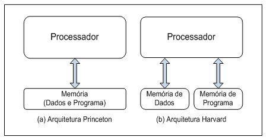

The term computer architecture refers to those attributes that have direct impact on the logical execution of a system that are visible to the programmer as:
An instruction sends to the processor a sequence of micro-operations to be performed.
An instruction set refers to the set of instructions recognized by a computer.
According to its purpose and form, the instructions can be classified as:
In a processor there are diverse registers, and some of these should be of knowledge of the programmer, called special registers.
Among the special registers normally found in computer architectures there are:
The mechanism of this disruption processors has three main functions:
Input/Output Ports (I/O) are the physical paths that allow the activities of exchange information between the processor and the external environment.
Through the I/O ports, the processor can exchange information with the user or to communicate with other devices such as storage devices.
The term computer organization refers to attributes that are not visible to the programmer, in other words, it is how the processor is implemented and contains basic blocks such as:
The data path consists of the required hardware for execution of an instruction, typically formed by the execution unit and the register file.
The execution unit consists of one or more ALUs and general and specific use registers, interconnected by a bus.
When an instruction is executed in the execution unit, it follows a cycle called instruction cycle.
The control unit is responsible for managing the internal data flow, the memory and the communication with input and output devices.
For this, this unit generate control signals. Each control signal commands a microoperation, e.g., an activation of the memory or the selection of an operation by the ULA, as the current instruction.
The memory system serves as a local for storing data and program.
The memory is divided into "words" which can be identified by a unique address.
There are two basic types of memory:
The data memory and instruction memory can be together in the same address space or separated.
When memories using the same address space, the architecture is referred as a Princeton (or Von Neumann) architecture.
When the data memory uses a different memory space of instruction is referred to as Harvard architecture.
The Princeton architecture can result in simpler hardware, while the Harvard architecture can result in better performance because it allows simultaneous access in both memories.
